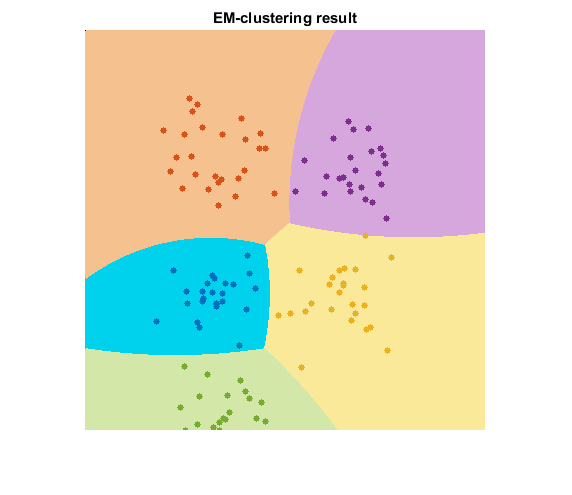
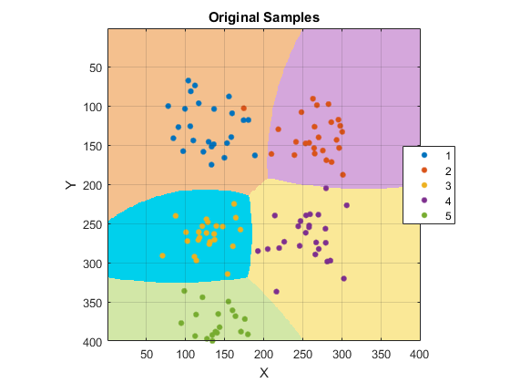

EM Clustering
Sources:
Contents
Options
K = 5; % number of clusters N = 25; % number of samples per cluster W = 400; H = 400; % width/height of output image containing 2D points % some colors for drawing clrFG = lines(K); clrBG = brighten(clrFG, 0.75);
Data
generate the training samples
samples = cell(K,1); for i=1:K K1 = fix(sqrt(K)); mu = ([mod(i-1,K1), fix((i-1)/K1)] + 1) * H / (K1+1); sig = [30 30]; samples{i} = bsxfun(@plus, bsxfun(@times, randn([N 2]), sig), mu); end samples = single(cat(1, samples{:})); % 2D points (nsamples-by-2)
true labels (nsamples-by-1)
if mexopencv.isOctave() %HACK: http://savannah.gnu.org/bugs/?45497 groups = int32(repelems(1:K, [1:K; repmat(N,1,K)]))'; else groups = int32(repelem((1:K)', N)); end
EM Cluster
cluster the data
em = cv.EM(); em.ClustersNumber = K; em.CovarianceMatrixType = 'Spherical'; em.TermCriteria.maxCount = 300; em.TermCriteria.epsilon = 0.1; [~,labels] = em.trainEM(samples); labels = int32(labels) + 1; % convert 0-based to 1-based indices
Plot
canvas to draw 2D points
img = zeros([H W 3], 'uint8');classify every image pixel
[X,Y] = meshgrid(1:W, 1:H);
XY = single([X(:) Y(:)]);
[~,response] = em.predict2(XY);
response = int32(response) + 1; % convert 0-based to 1-based indicesdraw the clustered pixels
for i=1:K idx = (response == i); if ~any(idx), continue; end img = cv.circle(img, XY(idx,:), 1, ... 'Color',uint8(clrBG(i,:)*255), 'Thickness','Filled'); end
draw the clustered samples
for i=1:size(samples,1) img = cv.circle(img, round(samples(i,:)), 3, ... 'Color',uint8(clrFG(labels(i),:)*255), 'Thickness','Filled'); end
display the result
imshow(img)
title('EM-clustering result')display the original sample labels vs. clusters
figure image([1 W], [1 H], reshape(double(response), [H W])) colormap(clrBG) hold on if mexopencv.isOctave() %HACK: GSCATTER not implemented in Octave scatter(samples(:,1), samples(:,2), [], double(groups)) else gscatter(samples(:,1), samples(:,2), groups, clrFG) end hold off axis equal ij, axis([1 W 1 H]), grid on title('Original Samples'), xlabel('X'), ylabel('Y')